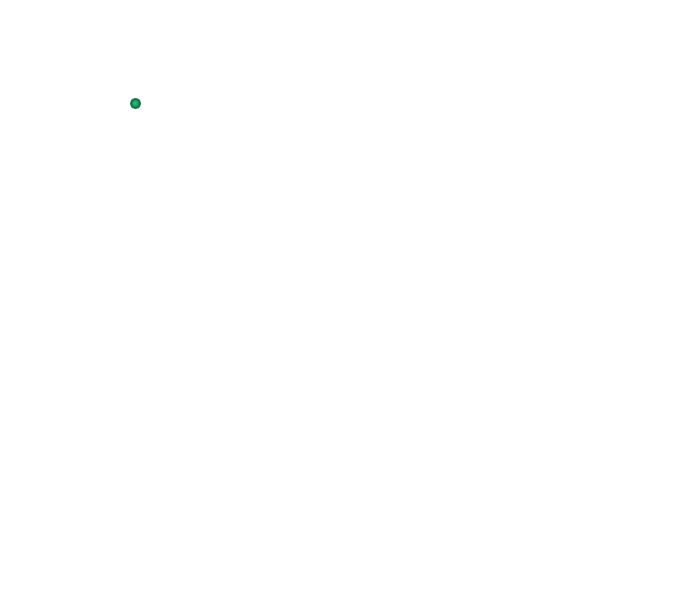
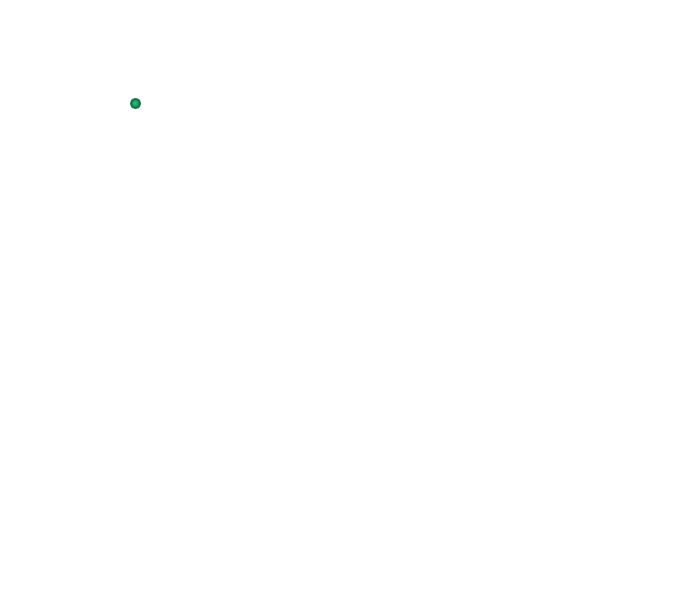

Пирей


 



Πειραιάς
Γενικές πληροφορίες:
- Χώρα: Ελλάδα
- Έκταση: 10,865 τ.χλμ.
- Πληθυσμός: 163.688 (2011)
- Περιφέρεια: Αττικής
Ο Πειραιάς βρίσκεται 12 χλμ. νοτιοδυτικά του κέντρου της Αθήνας και προς τη θάλασσα καταλήγει στις βορειοανατολικές ακτές του Σαρωνικού κόλπου. Αποτελεί σήμερα το μεγαλύτερο εμπορικό και επιβατικό λιμάνι της Ελλάδας με τουλάχιστον 20 εκ. επισκέπτες ετησίως. Στον Πειραιά δένουν και τα μεγάλα κρουαζιερόπλοια που μεταφέρουν επισκέπτες από όλο τον κόσμο. Λόγω του μεγέθους, της θέσης του και της πανάρχαιας σχέσης των Ελλήνων με τη θάλασσα, ο Πειραιάς εξελίχθηκε σε μεγάλο διεθνές ναυτιλιακό και εφοπλιστικό κέντρο. Εδώ έχουν κινηματογραφηθεί πολλές ταινίες μεταξύ άλλων και το "Ποτέ την Κυριακή" με την Μελίνα Μερκούρη ενώ το τραγούδι της ταινίας «Τα παιδιά του Πειραιά», που συνέθεσε ο Μ. Χατζηδάκις, κέρδισε όσκαρ και έκανε το λιμάνι του Πειραιά παγκόσμια γνωστό.
Εδώ θα επισκεφθείτε μουσεία, όπως το Αρχαιολογικό Μουσείο και το Ναυτικό μουσείο Ελλάδας, σπουδαία μνημεία, όπως τμήματα από τα τείχη του 5ου αιώνα π.Χ., κατάλοιπα αρχαίων ναών και κτηρίων αλλά και σύγχρονα κτήρια όπως το νεοκλασικό Δημοτικό Θέατρο, βιομηχανικά κτίρια των αρχών του 20ού αιώνα, διατηρητέα νεοκλασικά κτίσματα και εντυπωσιακά μοντέρνα οικοδομήματα, όπως το Στάδιο Ειρήνης και Φιλίας και το γήπεδο Γ. Καραϊσκάκης.
Πέρα από τα πλοία
Κεντρικό λιμάνι. Η αρχαία ονομασία του ήταν Κάνθαρος και σήμερα αποτελεί το κέντρο της ζωής της πόλης. Από εδώ θα πάρετε το πλοίο προς όλα τα νησιά του Αιγαίου (με εξαίρεση τις Σποράδες) και την Κρήτη. Μπορείτε να περπατήσετε τριγύρω για να δείτε τόσο τα επιβατηγά όσο και τα εμπορικά πλοία, καθώς και τις συνεχείς αφίξεις και αναχωρήσεις εμπορευμάτων και ανθρώπων από όλο τον κόσμο. Στην περιοχή Φρεατύδα διασώζονται τμήματα του αρχαίου Πειραϊκού Τείχους (στην παραθαλάσσια ζώνη).
Μαρίνα Ζέας (Πασαλιμάνι). Στη μαρίνα αυτή, αγκυροβολούν μερικά από τα πιο εντυπωσιακά γιωτ και κρουαζιερόπλοια. Η ακτή είναι γεμάτη με εστιατόρια, ταβέρνες, μπαρ και εμπορικά καταστήματα, για τις ανάγκες των επιβατών. Εκεί θα βρείτε το Αρχαιολογικό Μουσείο καθώς και το Αρχαίο Θέατρο της Ζέας (4ος - 3ος αι. π. Χ.).
Μικρολίμανο. Το λιμάνι αυτό προστατευόταν από τη θεά Μουνιχία Άρτεμη, ενώ σήμερα είναι δημοφιλές σημείο, όπου συγκεντρώνεται κόσμος από όλη την Αττική. Πρόκειται για ένα πανέμορφο λιμανάκι γεμάτο ψαροκάικα, μικρά σκάφη και πολυτελή γιοτ. Εάν σας αρέσει το ψάρι και τα θαλασσινά, δοκιμάστε μια από τις φημισμένες ταβέρνες του.
Καστέλλα. Κομψή και δημοφιλής συνοικία του Πειραιά, κτισμένη σε λόφο που είναι γνωστός και ως Προφήτης Ηλίας. Αν περπατήσετε προς την κορυφή του λόφου θα βρεθείτε σε σοκάκια με γραφικά σπίτια. Από εκεί, η θέα του κεντρικού λιμανιού, της Ζέας και του Μικρολίμανου είναι μοναδική. Στην περιοχή, υπάρχει ακόμα το υπαίθριο θέατρο «Βεάκειο», το οποίο το καλοκαίρι φιλοξενεί σημαντικές πολιτιστικές εκδηλώσεις.
Δημοτικό Θέατρο. Δεσπόζει σε μία από τις κεντρικές πλατείες της πόλης (πλατεία Κοραή). Χτίστηκε τη δεκαετία του 1880 σε νεοκλασικό στυλ από τον αρχιτέκτονα Ι. Λαζαρίμο και είναι ένα από τα πιο πολυσύχναστα μέρη και σύνηθες σημείο συνάντησης των κατοίκων του Πειραιά.
Σταθμός Η.Σ.Α.Π. (σταθμός μετρό «Πειραιάς»). Το μεγαλοπρεπές αυτό εκλεκτικιστικό οικοδόμημα με τον αψιδωτό θόλο (1929), έχει έντονες επιρροές από τους αντίστοιχους ευρωπαϊκούς σταθμούς της περιόδου. Πρόσφατα, ανακαινίστηκε πλήρως ο εσωτερικός εξοπλισμός, ενώ οι τοίχοι φιλοξενούν ζωγραφικά έργα των φοιτητών της Σχολής Καλών Τεχνών.
Αρχαιολογικό Μουσείο. Περιλαμβάνει, κυρίως, γλυπτά που ανακαλύφθηκαν στον Πειραιά και στις Αττικές ακτές. Τα εκθέματα περιγράφουν την ιστορία, την ακμή και την παρακμή της αρχαίας πόλης. Δώστε ιδιαίτερη προσοχή στα πέντε χάλκινα αγάλματα που ανακαλύφθηκαν στον Πειραιά το 1959: τον Αρχαϊκό Κούρο-Απόλλωνα, τα δύο αγάλματα της Αρτέμιδος, την Αθηνά του Πειραιώς και μια μάσκα αρχαίας τραγωδίας (4ος αι. π.Χ.). Ναυτικό Μουσείο. Θα το βρείτε στην Ακτή Μουτσοπούλου και τα εκθέματά του καλύπτουν περίπου 3.000 χρόνια ελληνικής ναυτικής ιστορίας.
Η ιστορία του ΠειραιάΟ Πειραιάς περιβάλλεται από θάλασσα και ο ρυθμός της ζωής του επηρεάζεται από αυτήν. Στην αρχαιότητα ήταν νησί και οι ταξιδιώτες διαπορθμεύονταν από την ενδοχώρα (το ρήμα ήταν: διεπεραιούντο). Από εκεί, μάλλον, έλαβε και το όνομά του. Η πολεοδόμηση της πόλης πραγματοποιήθηκε από τον αρχιτέκτονα Ιππόδαμο, στα μέσα του 5ου αι. π.Χ. Τα σχέδια του Ιππόδαμου χρησιμοποιήθηκαν ως κατευθυντήριες γραμμές και για την αναπολεοδόμηση της πόλης το 1834.
Ο Θεμιστοκλής ήταν ο πρώτος που συνειδητοποίησε τη σημασία του για την πόλη της Αθήνας και τον ανήγαγε στο κύριο λιμάνι της, σε αντικατάσταση του Kόλπου του Φαλήρου, τον οποίο χρησιμοποιούσαν οι Αθηναίοι ως τον 5ο αι. π.Χ. Επιθυμώντας την ύπαρξη ενός οχυρωμένου λιμανιού για την πόλη της Αθήνας, από το 493 έως το 479 π.Χ. έκτισε το Πειραϊκό τείχος. Αργότερα, ο Περικλής ολοκλήρωσε την οχύρωση, κτίζοντας τα Μακρά Τείχη, τα οποία προστάτευαν και τις δύο πλευρές του δρόμου, σε όλη τη διαδρομή από τον Πειραιά έως την Αθήνα. Στο Μεσαίωνα, ο Πειραιάς ήταν γνωστός ως Πόρτο Λεόνε, ονομασία που δόθηκε λόγω ενός τεράστιου λιονταριού από πέτρα, που φύλαγε την είσοδο του λιμανιού. Σήμερα, αποτελεί το κύριο λιμάνι της Αθήνας, το μεγαλύτερο στην Ελλάδα και ένα από τα πιο σημαντικά στη Μεσόγειο, σημαντικό κέντρο ναυτιλίας, βιομηχανίας και μεταφορών στη χώρα. Η ζωή στην πόλη επικεντρώνεται στα τρία λιμάνια της: το κεντρικό, τη Μαρίνα Ζέας και το Μικρολίμανο.
Πώς να πάτε:Μπορείτε να χρησιμοποιήσετε το μετρό και να αποβιβαστείτε στη σταθμό «Πειραιάς». Επίσης, από την Αθήνα, υπάρχουν τακτικά δρομολόγια λεωφορείων που ξεκινούν από την οδό Φιλελλήνων στην πλατεία Συντάγματος (Νο 40) και την οδό Αθηνάς στην πλατεία Ομονοίας (Νο 49) και καταλήγουν στην Ακτή Ξαβερίου (Πειραιάς).
Пирей
Основная информация:- Страна: Греция
- Площадь: 10,865 кв.км.
- Население: 163.688 (2011)
- Регион: Аттика
Расстояние до Пирея составляет 12 км. к юго-западу от центра Афин и по направлению к морю заканчивается на северо-восточном побережье Саронического залива. Сегодня это крупнейший торговый и пассажирский порт Греции, который ежегодно посещают не менее 20 миллионов человек. Большие круизные лайнеры, которые перевозят посетителей со всего мира, также причаливают в Пирее. Благодаря своим размерам, расположению и древним связям греков с морем, Пирей превратился в крупный международный центр судоходства. Здесь было снято много фильмов, в том числе "Никогда в воскресенье" с Мелиной Меркури, в то время как песня из фильма "Дети Пирея", написанная М. Хаджидакис получил премию "Оскар" и сделал порт Пирей всемирно известным.
Здесь вы посетите музеи, такие как Археологический музей и Морской музей Греции, великие памятники, такие как части стен 5 века до нашей эры, остатки древних храмов и зданий, но также и современные здания, такие как неоклассический муниципальный театр, промышленные здания начала 20 века, сохранившиеся неоклассические здания и впечатляющие современные здания, такие как стадион мира и дружбы и стадион С. Караискакис.
За пределами кораблей
Главный порт. Его древнее название было Кантарос, и сегодня он является центром жизни города. Отсюда вы отправитесь на пароме на все острова Эгейского моря (за исключением Спорад) и Крита. Вы можете прогуляться, чтобы увидеть как пассажирские, так и коммерческие суда, а также постоянные прибытия и отправления товаров и людей со всего мира. В районе Фреатиды сохранились части древней Пиратской стены (в прибрежной зоне).
Марина Зеа (Пасалимани). В этой пристани стоят на якоре некоторые из самых впечатляющих яхт и круизных судов. Побережье заполнено ресторанами, тавернами, барами и магазинами для нужд пассажиров. Там вы найдете Археологический музей, а также Древний театр Зеи (4-3 века до нашей эры).
Микролиман. Этот порт был защищен богиней Мунихией Артемидой, и сегодня это популярное место, где собираются люди со всей Аттики. Это прекрасная гавань, полная рыбацких лодок, небольших лодок и роскошных яхт. Если вы любите рыбу и морепродукты, зайдите в одну из его знаменитых таверн.
Кастелла. Элегантный и популярный район Пирея, построенный на холме, известном как Профитис Илиас. Если вы подниметесь на вершину холма, то окажетесь в переулках с живописными домами. Оттуда открывается уникальный вид на главный порт, Зею и Миклиманос. В этом районе до сих пор находится театр под открытым небом "Веакейо", в котором летом проводятся важные культурные мероприятия.
Муниципальный театр. Он возвышается над одной из главных площадей города (площадью Корай). Он был построен в 1880-х годах в неоклассическом стиле по проекту архитектора И. Лазаримо и является одним из самых оживленных мест и общим местом встреч жителей Пирея.
Станция Н.С.А.П. (Станция метро "Пирей"). Это великолепное эклектичное здание с арочным куполом (1929) имеет сильное влияние соответствующих европейских станций того периода. Недавно внутреннее оборудование было полностью отремонтировано, а на стенах висят картины учеников Школы изящных искусств.
Археологический музей. В основном это скульптуры, обнаруженные в Пирее и на побережье Аттики. Экспонаты рассказывают об истории, расцвете и упадке древнего города. Обратите особое внимание на пять бронзовых статуй, обнаруженных в Пирее в 1959 году: архаичный Курос-Аполлон, две статуи Артемиды, Афины Пирейской и маска древней трагедии (4 век до н.э.). Морской музей. Вы найдете его на побережье Муцопулу, и его экспонаты охватывают около 3000 лет греческой морской истории.
История ПиреяПирей окружен морем, и оно влияет на ритм его жизни. В древние времена это был остров, и путешественники путешествовали с материка (глагол был: transpereaudo). Оттуда, вероятно, он и получил своё имя. Градостроительное планирование города было осуществлено архитектором Гипподамом в середине 5 века до н.э. Планы Гипподама были использованы в качестве руководящих принципов и для реконструкции города в 1834 году.
Фемистокл был первым, кто осознал его важность для Афин, и возвел его в свой главный порт, заменив залив Фалер, которым афиняне пользовались до 5 века до н.э. Желая существования укрепленного порта для города Афины, с 493 по 479 гг до нашей эры, он построил Пиратскую стену. Позже Перикл завершил укрепление, построив длинные стены, которые защищали обе стороны дороги, на всем пути от Пирея до Афин. В средние века Пирей был известен как Порто-Леоне, название дано из-за огромного каменного льва, который охранял вход в порт. Сегодня это главный порт Афин, крупнейший в Греции и один из важнейших в Средиземноморье, важный центр судоходства, промышленности и транспорта в стране. Жизнь в городе сосредоточена на трёх его портах: Центральном, Марина-Зеа и Миклимано.
Как пройти:Вы можете воспользоваться метро и высадиться на станции "Пирей". Кроме того, из Афин регулярно отправляются автобусы, начиная с улицы Филеллинон до площади Синтагма (№ 40) и улицы Афина до площади Омония (№ 49) и заканчивая побережьем Ксавери (Пирей).